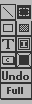
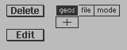
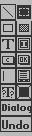

geoBEAVER v1.0 (c) 1998 by Bo Zimmerman This program is shareware. If you find the program useful, please register it. It will encourage me to continue developing this software. Registration instructions can be seen by executing the program. Please send any and all reports of praise or problems to bo@zimmers.net, or to the address shown on the registration screen. Only registered users will receive bug fixes and new feature enhancements. geoBEAVER is an application to assist GEOS programmers who use any of the geoWrite-based assembly packages (like geoProgrammer or Concept) in the development of screens, menus, and dialog boxes. It does this by providing a development environment in which screens and menus can be freely laid out and tweaked. When the design is completed, the design can be exported into geoWrite source code and compiled into your applications. Those using geoBEAVER should already know how to program GEOS assembly in order to make proper use of geoBEAVER's Export function. Without the Export function, geoBEAVER is little more than a very limited drawing program, so keep this in mind when using this application. Designs are saved in geoBEAVER work files, which are opened and updated from the application. Each work file can hold exactly one menu and/or one screen and/or one dialog box (assuming all available memory is not used up). This includes all picture and text data that might accompany each design. When the application is started, a familiar open/create work file dialog box is displayed. From here, the program will default into Screen Design mode. The menus at the top are used to navigate the application. Under the "geos" menu is all the usual stuff. The "file" menu allows the work file to be updated, renamed, etc. The "file" menu also contains the "export" function (discussed below). Lastly, the "mode" menu allows switching between Screen Design, Menu Design, Dialog Box Design modes. Screen Design In this mode, the entire "backdrop" to an application can be designed. All of the work is done with the point and click of the mouse, using the toolbar to the left. The toolbar looks like this:  The tool with the dark backdrop is the SELECTED tool, and can be changed by simply clicking on a new tool. When clicking on a new tool, sometimes the SELECTED tool will change to the one clicked on, and will sometimes not, depending upon the tool that is newly clicked on. From the top, moving left to right, the tools are as follows: The Line tool is the first tool, and just as the name implies, it lets vertical, horizontal, and other lines be drawn on the screen. The Pattern tool (the fourth from the top, on the right hand side) has no function when used with the Line tool. The next tool is the Selection tool. With it, any other drawn object (like a line, a box, or an image, etc) may be selected and manipulated. Once a drawn object has been highlighted, one of the following things may be done: The small box in the upper-left hand corner of the highlighted area may be clicked on and dragged in order to move a drawn object around. The small box in the lower-right hand corner may be clicked on and dragged to resize a drawn object. Not all drawn objects may be resized. Hitting the DEL key when a drawn object is highlighted will present the option of deleting that object from the design. Double clicking in a highlighted area will activate the Pattern tool for that object. The Pattern tool (once again, its the fourth tool from the top on the right-hand side) may also be clicked on while an object is highlighted to change its pattern details. The next tool on the toolbar is the Outline Box tool. The Pattern tool may be used in conjunction with the Outline Box tool to change the kind of outline that is drawn. Next is the Filled Box tool. The pattern tool may also be used with the Filled Box tool to select one of the GEOS patterns for use when creating a filled box. Next is the Text tool. This will cause a blinking cursor to appear on the screen, allowing any text to be entered. Text entry is terminated by hitting the RETURN key. The pattern tool may be used with the Text tool, before the text is entered, to change the Style of the text. Next is the Image tool. When used, a dialog to confirm the insertion of a photo scrap will be presented. Photo Scraps on the active drive may be generated using geoPaint, or may come from a Photo Album. Next is the Click Box tool. This tool behaves exactly the same as the Image tool. It will pull a Click Box picture from a Photo Scrap on the active drive. The only difference between this tool and the Image tool is how the drawn object is Exported (see Exporting Designs below). Next is the Pattern tool. This tool is never used alone, but is always clicked on when another tool is already selected or when a drawn object is highlighted using the Selection tool. It is used to specify how the already selected tool or drawn object will behave or appear. If the Pattern tool has no meaning for the already selected tool or drawn object, a notification to this effect will appear. Next is the UNDO tool. This has a very specific purpose, so read carefully: The UNDO tool will DELETE the most recent drawn object that was created using the Screen Designer. It will *NOT* UNDO any deletions that may have been done, or any pattern changes that may have made, or any drawn objects which may have been moved or resized. Last is the Full Screen tool. When clicked, the toolbar and menu will disappear, allowing the already selected tool to be used on the entire screen. Normally, certain areas of the screen are off-limits to the Screen Design tools. Clicking this tool will fix the problem. As soon as the already selected tool has been used, geoBEAVER will revert to the normal screen mode. Clicking the Full Screen tool is required before any use of a design tool on restricted areas of the screen. Menu Design The Menu designer is a little tricky, and may require some getting used to. As the name implies, this mode is used to create drop-down menus that appear in the upper-left hand corner of a typical application's screen. The work screen for this mode (after the user has created some menus) may look like this:  When this mode is entered for the first time, nothing more than a single Plus Box floating next to the two click boxes (Delete and Edit) will be seen. These click boxes will not be useful until some menus and menu items are created, so keep reading. The Plus Box is used to add menu items at all levels. Its visible location will lend a clue as to where a menu option will be added, and how the Plus Box will behave when it is clicked on. When the Plus Box is by itself (as it is when the Menu Design mode is first entered or when the Plus Box is located to the right of the any top level menu options created), the Plus Box can only be used to add new top level menu options. To do this, click and hold down the mouse button inside the Plus Box and drag the pointer to the right. The button should not be released until a box of sufficient size for the desired menu text has been created. A blinking cursor will next appear inside the box, allowing some menu text for the top level menu to be entered. Hitting RETURN will cause the new top level menu option to automatically resize itself as appropriate. To create a submenu under one of the top level menu options, click once inside a top level menu option and highlight it. Now the Plus Box will appear immediately below the top level menu option. The Plus Box is now in First Menu Option mode. To create the submenu option, click and hold down the mouse button inside the Plus Box and drag the pointer to the right. Release the button only when a box sufficient to hold the LARGEST submenu option has been created. A blinking cursor will now appear, allowing text for the first submenu option to be entered. For each subsequent submenu option, click again inside the same top level menu option, and highlight it. The Plus Box will appear immediately below the last submenu option. The Plus Box is now in Subsequent Menu Option mode. To create a new submenu option, click once inside the Plus Box and release. A new submenu option will be created immediately below the last one, and a blinking cursor will appear allowing text to be entered for that option. Tepeat this process for any other submenu options that are required. Any submenu option can also be turned into a submenu itself. Clicking inside a submenu option and highlighting it will cause the Plus Box to appear immediately to the right of that submenu option. The Plus Box is now in First Menu Option mode again, so clicking and holding down the mouse button will create another submenu. Clicking inside ANY menu option box will highlight that box and present the user with the Plus Box at a location appropriate to creating submenus under that menu option. To create new top level menu options, click away from all of the menu options, in a blank area of the screen for instance. This will place the Plus Box in a position to create new top level menu options. Keep in mind that whenever a submenu is created under a menu option, that menu option becomes a submenu in itself. Whenever a menu option does not have any submenus under it, that menu option is merely a click box to which the programmer may assign an application function later on. There are other reasons to click and highlight a menu option box other than the positioning of the Plus Box. A highlighted menu option can also be used in conjunction with the Edit and Delete buttons to the left. When the Edit button is clicked while a menu option is highlighted, the text inside that menu option may be changed. When the Delete button is clicked while a menu option is highlighted, the option to delete that menu option will be presented. Hitting the DEL key while a menu option is highlighted will have the same effect as hitting the Delete button. Double clicking inside a menu option will have the same effect as hitting the Edit button while that menu option is highlighted. Keep in mind that deleting a menu option which is also a submenu will delete all submenu options under that menu option. The Menu Designer may seem a little strange at first, but after awhile it will be a quick and easy way to make application menus. As confusing as these instructions sound, you will have to take my word for it that the above statement is true. It is much easier to use the Menu Designer than it is to describe it. Dialog Box Design Easily the most powerful of the editors in geoBEAVER is the Dialog Box Designer. When entering Dialog Design mode, a blank dialog box will appear in the center of the screen along with a toolbar on the left. This toolbar looks like this: Many of these tools are the same as the ones in the Screen Design mode. Each tool will now be covered from the first button in the upper left, moving downward from left to right. The first tool is the Line tool, and is classified as a Graphics tool. It works exactly the same as it does in Screen Design mode. No Patterns are defined for this tool. The next tool is the Selection tool, and operates exactly as it does in Screen Design mode except that the user will have many more drawn objects to operate on. Included among the drawn objects which may be selected and manipulated is the Dialog Box itself. The next tool is the Outline Box Tool. It operates exactly as it does in Screen Design mode, and is classified as a Graphics tool. Next is the Filled Box Tool, which also operates exactly as it does in Screen Design mode, and is also classified as a Graphics tool. Next is the Text Tool. This tool also operates as in Screen Design mode. The Bitmap Tool works as in Screen Design mode, and is classified as a Graphics tool. Now we come to Clickbox Tool. During normal use, this tool will appear to operate as in Screen Design mode. However, there IS a Pattern button function assigned to this tool, which operates ONLY when the Selection tool has been used to highlight a created Clickbox. When this is done, the user will be informed as to what Hex value will be contained in the sysDBData ($851d) memory location when a Dialog Box is closed using that particular Clickbox. This value is chosen by geoBEAVER, and can be changed only from Exported assembly source. The System Button Tool is similar to the Clickbox tool, except that the image for the clickbox created is chosen from a buffet of GEOS system buttons, which are presented when a location for the System Button is selected. The Pattern button operates as it does for the Clickbox Tool in that it will display the sysDBData return code. The Input Text Tool can only be used once inside any Dialog Box. It creates a blinking cursor on the screen where the user of the application may type text input. When a location for the Input text is chosen, a dialog box will be presented (a dialog which is also available via the Pattern Tool after the drawn object is created) containing important details about the text input. The first option on the dialog box is a place to enter the geoProgrammer variable name which will be used by the application to refer to the section of memory where text input will be saved. The next option is the maximum size of that text input. The File Box Tool can also only be used once. It creates a very large box where filenames from the active drive will be presented when the dialog box is shown to the application user. Those filenames will depend on the details entered into the Pattern dialog box which appears after this object is drawn. The Dialog box presented allows entry of the File Class of the filenames to show inside the File Box. See the GEOS programming reference for details on what a File Class is. The other option is the File Type, and is manipulated using the up and down arrow button to the right of this option. The Filenames will not appear, of course, until the Dialog Box is actually exported from geoBEAVER, compiled, and run from inside an end application. The details dialog box for this tool can, as in the case of the Input Text tool, be referenced with the Pattern tool after the drawn object is created. The Variable Text Tool is used to position some text which will depend upon a variable in memory at the time the application containing this Dialog box is run. When a location for Variable Text is chosen, the opportunity to enter a geoProgrammer variable name for the string to display at run-time will be presented. Just as in the case of the Input Text tool, the variable name dialog box can be changed later on using the Pattern tool. The Pattern Tool operates exactly as it does in Screen Design mode, effecting every other tool according to that tools purpose. As in Screen Design mode, double clicking on a drawn object is a shortcut to that drawn objects Pattern tool details. The Dialog Properties Tool can also be accessed by using the Pattern Tool against the highlighted Dialog Box itself. This tool presents a dialog box with numerous details about the Dialog box being designed. These details include the After-Draw routine, which is the label name of a GEOS assembly code routine (which must contain an "rts" command) that will execute after the dialog box being designed has been drawn by its host application. Next is the label name of a GEOS assembly code routine to call during an OtherPressVec event. This routine will be called whenever the mouse button is clicked inside the dialog box for instance. See the GEOS programmers reference for more information on this event. Next is the AutoClose checkbox. When darkened, this option will DISABLE any OtherPressVec routine entered and override it. Selecting this option will cause the dialog box being designed to close during run-time whenever the user of the end application clicks anywhere inside the dialog box. Next is the Edit Shadow Pattern button, which allows the user to edit the pattern used when drawing the shadow of the dialog box. The last tool is the Undo Tool, and operates exactly as it does in Screen Design mode, with exactly the same restrictions. The user should keep in mind the following quirk when designing dialog boxes using geoBEAVER: Unlike Screen Design mode, the drawn objects will not necessarily be drawn at run-time in the same order in which they were created using geoBEAVER. This is because all drawn objects created using tools classified as Graphics tools will be drawn LAST at run-time. This makes putting a System Button, for instance, on top of a Filled Box very difficult. This quirk will be removed from future versions, but should be kept in mind by the user. Exporting Designs One of the options under the File menu in geoBEAVER is the "export" function. This function is used to export one or all of the designs inside a geoBEAVER work file. When this menu option is selected, another dialog box will appear from which the Menu Design, Screen Design, Dialog Box Design, or all three may be selected for exporting. A place to enter the name of a geoWrite file to create during the Export process is also presented. All Exported source code and pictures will be created inside the geoWrite file. geoBEAVER will not overwrite existing geoWrite files, so be aware of this when entering a geoWrite file name. After exporting, the user should inspect the file created and fill in any options which geoBEAVER left open to implementation. This includes the skeleton of the application, any Clickbox handling routines, etc. Conclusion Well, that's it for these quick and dirty docs. As mentioned previously, please report any problems, and please register the program so that you can receive updates, bug fixes, and encourage even MORE features to be added to this already powerful development tool. Enjoy, Bo Zimmerman bo@zimmers.net